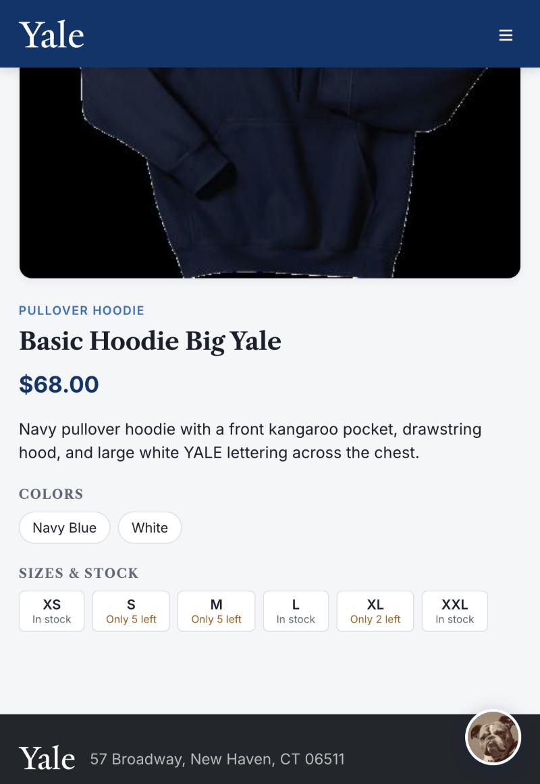
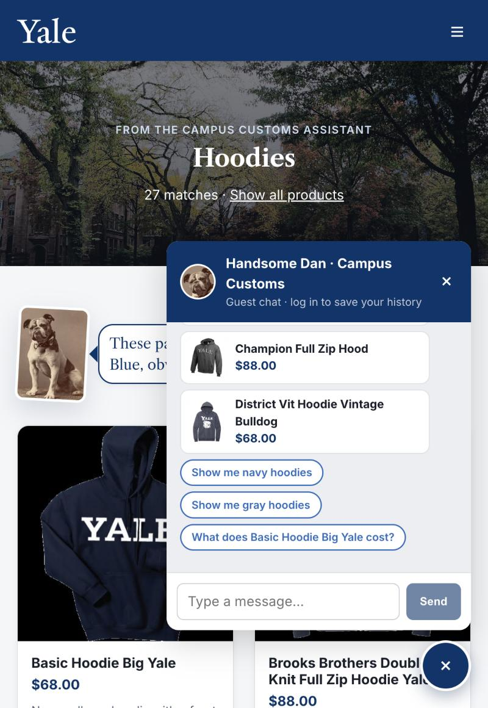
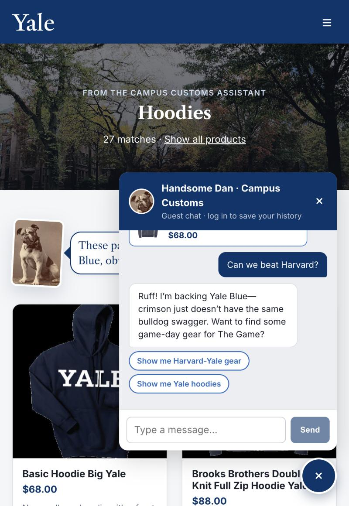

Each snap below lists the check it covers, the page it was taken on, the screenshot, and what it shows. Screenshots are in app_check_images/.
Snap 1: Inventory level: Stock tracked per size on the Basic Hoodie Big Yale page
Check
Inventory level
Page
/products/basic-hoodie-big-yale
Captured
2026-10-03 20:45:10
Tester's note
This shows that the inventory is being track for each size and for a specific product.

What this shows: The product page shows live inventory for each size of this specific product, read from the database: XS, L, and XXL are 'In stock', S and M show 'Only 5 left', and XL shows 'Only 2 left'. Those numbers match the inventory table (XS 15, S 5, M 5, L 8, XL 2, XXL 25), so the site tracks real stock per size.
Snap 2: Search-result cards: Asking the chat for hoodies fills the page with matching cards
Check
Search-result cards
Page
/products?view=chat
Captured
2026-10-03 20:45:59
Tester's note
This shows that the search result cards work.

What this shows: After the customer asked the chat 'What hoodies do you have?', the Products page updated itself to 'Hoodies, 27 matches' and shows a product card (image, name, price, short description) for every matching hoodie from the catalogue, such as the Basic Hoodie Big Yale at $68.00. The chat also shows its own small cards and tap-to-ask follow-ups. The 27 matches equal every hoodie in the database.
Snap 3: Problem 9 usability feature: Handsome Dan chirps Harvard, politely
Check
Problem 9 usability feature
Page
/products?view=chat
Captured
2026-10-03 20:46:46
Tester's note
I had Handsome Dan learn to make fun of Harvard politely as part of the Question 9 thing.

What this shows: A Problem 9 improvement: the assistant became Handsome Dan, a perky, engaging bulldog who teases Harvard without ever being rude. Asked 'Can we beat Harvard?', he answers 'Ruff! I'm backing Yale Blue, crimson just doesn't have the same bulldog swagger,' then steers back to shopping with tap-to-ask suggestions ('Show me Harvard-Yale gear', 'Show me Yale hoodies'). Dan's photo avatar and the cheering 'found it' Dan above the results are Problem 9 additions too.